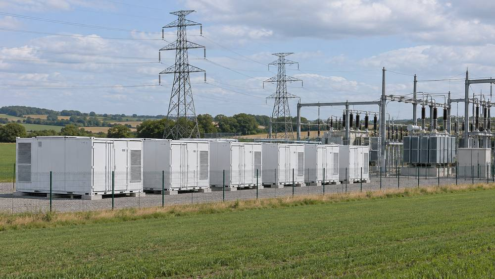

ESS 3차 입찰 14곳 1,194MW, 2차의 두 배

전남 6곳·전북 5곳·충남 1곳·제주 2곳이 우선협상 대상이다. 최종 물량은 12월 4일 확정되고, 설비는 2029년 2월까지 지어야 한다.
에너지저장장치(ESS) 중앙계약시장 3차 입찰에서 전남·전북·충남·제주의 14곳, 1,194MW가 우선협상 대상으로 뽑혔다. 기후에너지환경부와 전력거래소는 11월 26일 결과를 내고 최종 낙찰 물량은 12월 4일 발표한다고 밝혔다. 2월 12일 발표된 2차 우선협상 물량 565MW(전남 6곳·제주 1곳)의 두 배를 넘는다.
지역별로는 전남 6곳 539MW, 전북 5곳 480MW, 충남 논산 1곳 96MW, 제주 표선 2곳 79MW다. 전남은 해남 등 5개 변전소, 전북은 소성 등 3개 변전소에 연결된다. 육지 낙찰은 1,115MW로 공고 물량을 넘었고(105%인 1,155MW까지 허용), 제주는 80MW 가운데 79MW다.
전력거래소의 9월 22일 공고 제2026-05호에서 육지 물량은 1,100MW·6,600MWh였고, 6시간 연속 방전이 조건이다. 거래기간은 15년이고, 그동안 배터리 보증수명 70% 이상과 운전효율 65% 이상을 지켜야 한다. 입찰은 10MW 초과 100MW 미만 범위에서 1MW 단위로 받았고, 계약이 끝나 설비를 없앨 때는 폐배터리를 국내에서 처분해야 한다. 점수는 가격 50점과 비가격 50점으로 매겼다(2차 때 60대 40에서 바꾼 비율). 기후부는 계통관리변전소 중심이던 입지 평가를 전국 계통 여건 분석으로 넓혔다고 설명했다.
낙찰 사업자는 2027년 8월까지 발전사업 허가를, 2029년 2월까지 준공을 마쳐야 한다(2차 준공 기한은 2027년 12월). 공고문은 낙찰자 발표일부터 9개월 안에 허가를 못 받으면 낙찰을 취소한다고 정했다. 기후부와 전력거래소는 2027년 상반기에 4차 중앙계약시장을 열 계획이다.
시민에너지 관점
이번 1,194MW 가운데 전남 539MW와 전북 480MW가 호남 몫이다. 입지 평가를 전국 계통 여건으로 넓혔는데도 물량이 호남에 몰린 것은 그만큼 그 지역 전력망 사정이 급하다는 뜻이다. 그런데 입찰 단위가 10MW를 넘어야 해 마을·협동조합 발전소는 이 시장에 들어올 수 없다. 2027년 상반기 4차 공고에서 10MW 하한이 그대로 남는지가 소규모 사업자에게는 첫 번째 확인할 대목이다.
출처: 기후에너지환경부 2026-11-26 보도참고자료 「ESS 중앙계약시장 14개소 선정」(전력시장과, 붙임 hwpx) 원문 보기
출처: 한국전력거래소 2026-09-22 공고 제2026-05호 「2026년 ESS 중앙계약시장(육지) 경쟁입찰 공고」(붙임 공고문 pdf) 원문 보기
출처: 기후에너지환경부 2026-02-12 보도참고자료 「ESS 중앙계약시장 7개 사업자 선정」 원문 보기